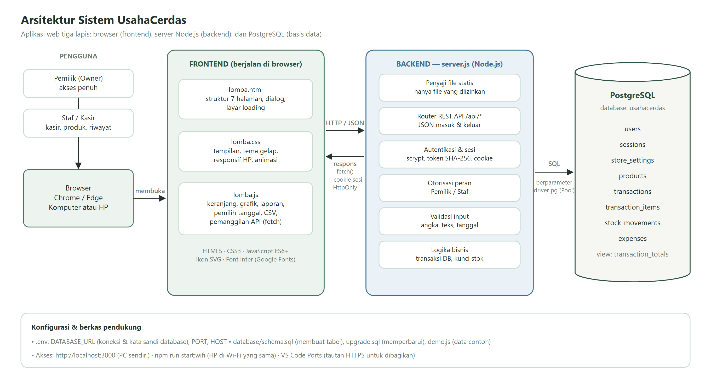
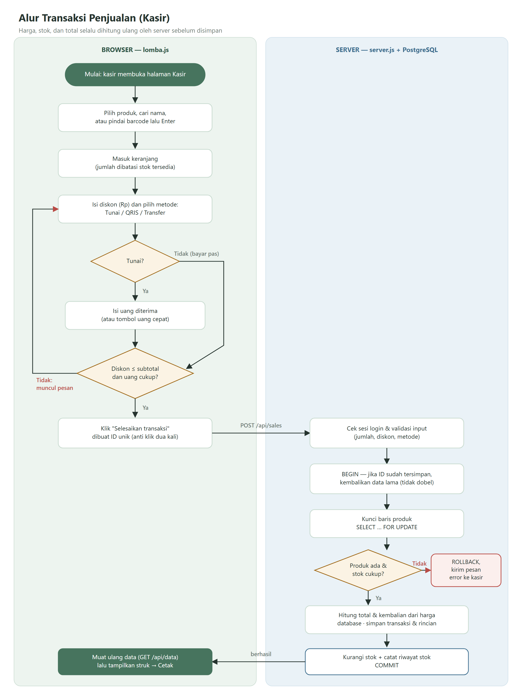
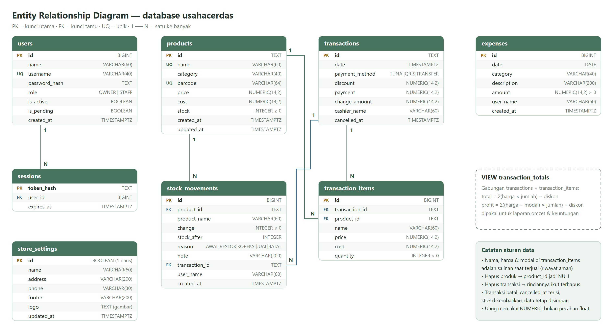

Aplikasi kasir & manajemen keuangan UMKM — dokumentasi fitur, arsitektur, basis data, dan batasan sistem
| Lapisan | Teknologi |
|---|---|
| Frontend | HTML5, CSS3, Vanilla JavaScript (ES6+), Google Fonts Inter, ikon SVG inline |
| Backend | Node.js (modul http bawaan), modul Crypto (scrypt & SHA-256) |
| Basis data | PostgreSQL, driver pg v8.23.1 |
| Hosting | Server lokal Node.js (localhost:3000), bisa diakses HP di jaringan Wi-Fi yang sama; siap dipindah ke VPS |
| Lisensi pihak ketiga | pg (MIT), font Inter (SIL Open Font License) |
UsahaCerdas memakai arsitektur client–server tiga lapis:
lomba.html, lomba.css, dan lomba.js.fetch() dalam format JSON.server.js memakai modul http bawaan Node.js, tanpa framework./api/*.pg (connection pool).
POST /api/sales beserta ID unik.SELECT … FOR UPDATE).Jika ada yang gagal, semua langkah dibatalkan (ROLLBACK). ID unik mencegah transaksi tercatat dua kali.

Database usahacerdas memiliki 8 tabel dan 1 view.

| Tabel | Fungsi | Kolom utama |
|---|---|---|
| users | Akun pengguna | id (PK), name, username (unik), password_hash, role (OWNER/STAFF), is_active, is_pending |
| sessions | Sesi login | token_hash (PK), user_id (FK → users), expires_at |
| store_settings | Profil toko (1 baris) | name, address, phone, footer, logo |
| products | Data produk | id (PK), name (unik), category, barcode (unik), price, cost, stock ≥ 0 |
| transactions | Header penjualan | id (PK), date, payment_method, discount, payment, change_amount, cashier_name, cancelled_at |
| transaction_items | Rincian penjualan | id (PK), transaction_id (FK), product_id (FK), name, price, cost, quantity > 0 |
| stock_movements | Riwayat stok | id (PK), product_id (FK), change, stock_after, reason (AWAL/RESTOK/KOREKSI/JUAL/BATAL), transaction_id (FK), user_name |
| expenses | Pengeluaran | id (PK), date, category, description, amount > 0 |
transaction_totals menghitung total dan keuntungan setiap transaksi. Dari view ini laporan omzet dan laba dibuat.